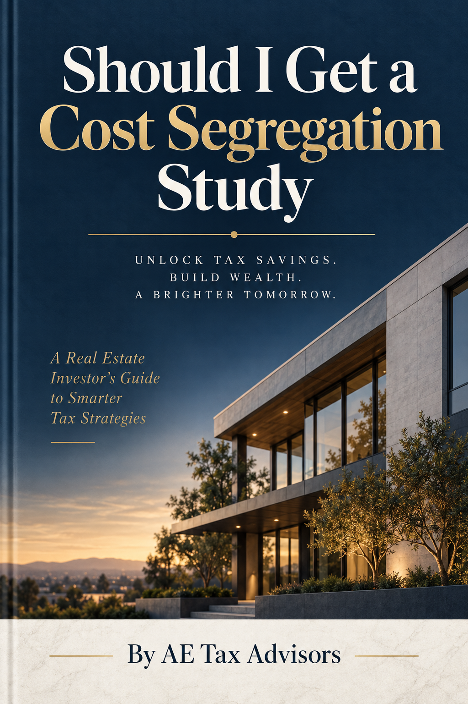

Confirm the tax objective
Identify which income the depreciation may affect, when the benefit is needed, and which limitations apply to the owner.
Put it to work: Review the idea with the return preparer before commissioning the engineering work.The Complete Guide to Accelerating Depreciation and Saving Thousands on Your Real Estate Taxes

This book covers everything you need to know about cost segregation studies, from the basic principles of depreciation to advanced strategies for maximizing your tax savings.
Understand how the IRS lets you write off the cost of your property over time, and why most investors leave money on the table with standard depreciation.
Learn the engineering-based methodology that reclassifies building components into shorter depreciation categories for massive upfront deductions.
Master the current 100% bonus depreciation rules and understand how they multiply the power of a cost segregation study.
Discover specific strategies for short-term rentals, long-term rentals, commercial properties, self-storage, hotels, and restaurants.
Walk through real examples showing exactly how much investors save, with step-by-step math you can apply to your own properties.
Know what to look for in a cost segregation provider, red flags to avoid, and how to ensure your study is IRS audit-ready.
Whether you own a single rental property or a portfolio of commercial buildings, this book will help you understand how cost segregation can work for you.
"After reading this book, I realized I had been overpaying on taxes for years. The cost segregation study on my rental properties saved me over $47,000 in the first year alone."
"This book breaks down a complex tax strategy into simple, actionable steps. I used the calculator in Chapter 12 to estimate my savings before even hiring a firm."
"As a CPA, I recommend this book to every client with investment real estate. It is the most comprehensive guide to cost segregation I have found."
Get your free copy of "Should I Get a Cost Segregation Study?" and discover how much you could save.
A cost segregation study accelerates depreciation by identifying building components that may belong in shorter recovery periods. The value is highly specific to the property, owner, placed-in-service date, tax posture, and holding plan. This expanded guide organizes the questions an investor should resolve before ordering a study and the records needed to support the result afterward.
Best for: commercial, multifamily, and short-term-rental owners deciding whether accelerated depreciation fits their facts.
Keep the analysis honest. A projected deduction is not the same as usable tax savings. Passive-activity limits, basis, at-risk rules, business use, recapture, state treatment, and future plans can change the outcome.
Identify which income the depreciation may affect, when the benefit is needed, and which limitations apply to the owner.
Put it to work: Review the idea with the return preparer before commissioning the engineering work.Separate land, building, acquisition costs, later improvements, and previously depreciated components using supportable records.
Put it to work: Reconcile settlement statements, fixed-asset schedules, appraisals, and capital projects.Use plans, photos, invoices, site details, construction records, and a physical inspection to classify components.
Put it to work: Favor providers that document methodology and property-specific evidence.Compare current-year study, look-back treatment, planned renovation, disposition timing, and the effect of available bonus depreciation.
Put it to work: Measure present-value benefit, not only the first-year deduction.Passive activity, real-estate professional status, short-term-rental participation, basis, and at-risk limits can delay use.
Put it to work: Model both deduction generated and deduction expected to be currently usable.Component-level records can support partial dispositions and retirement of replaced assets during a renovation.
Put it to work: Coordinate the study with planned roof, HVAC, flooring, or interior replacements.Accelerated deductions may change the character and timing of tax on sale, so exit assumptions belong in the initial analysis.
Put it to work: Compare hold, refinance, exchange, and taxable-sale scenarios.Keep the report, photos, invoices, calculations, correspondence, and return treatment together for future preparers and inquiries.
Put it to work: Document who reviewed the classifications and how the study was implemented.There is no universal threshold; study cost, available basis, tax rate, limitations, and holding period determine economic value.
Potentially. A look-back study may adjust prior depreciation without amending every return, subject to the applicable accounting-change rules.
It generally changes timing by reallocating basis into shorter-lived categories; the present value of earlier deductions is the central benefit.
Property-specific engineering analysis, documented assumptions, detailed classifications, reconciled basis, and implementation consistent with the tax return.
Renovation can create partial-disposition opportunities and new assets, but records must distinguish removed components from replacements.
The property owner, tax preparer, cost-segregation provider, and sometimes legal or transaction advisors should agree on facts and timing.
Evaluate the study, the timing, and the evidence together becomes useful when it improves a live decision for commercial, multifamily, and short-term-rental owners deciding whether accelerated depreciation fits their facts. These eight workshops connect the book’s evidence, assumptions, owners, and stop conditions to a defined next action. Follow the sequence for a new project, or begin with the module that matches today’s constraint.
Identify which income the depreciation may affect, when the benefit is needed, and which limitations apply to the owner. Review the idea with the return preparer before commissioning the engineering work. Create a one-page cost segregation decision guide baseline for confirm the tax objective. Cite each confirm the tax objective source, mark its assumptions, and name the evidence that would invalidate this conclusion. This exercise is calibrated for commercial, multifamily, and short-term-rental owners deciding whether accelerated depreciation fits their facts.
Separate land, building, acquisition costs, later improvements, and previously depreciated components using supportable records. Reconcile settlement statements, fixed-asset schedules, appraisals, and capital projects. Assign one evaluate the study, the timing, and the evidence together owner to establish depreciable basis, describe the finished result, and schedule its review before an open question becomes an accidental commitment. This exercise is calibrated for commercial, multifamily, and short-term-rental owners deciding whether accelerated depreciation fits their facts.
Use plans, photos, invoices, site details, construction records, and a physical inspection to classify components. Favor providers that document methodology and property-specific evidence. Test map the property facts with a conservative case, an expected cost segregation decision guide case, and a failure case. Store the evidence beside the conclusion for the next reviewer. This exercise is calibrated for commercial, multifamily, and short-term-rental owners deciding whether accelerated depreciation fits their facts.
Compare current-year study, look-back treatment, planned renovation, disposition timing, and the effect of available bonus depreciation. Measure present-value benefit, not only the first-year deduction. List everyone affected by model timing alternatives, the evaluate the study, the timing, and the evidence together decision each person controls, and the missing information. Resolve those gaps before documents or money move. This exercise is calibrated for commercial, multifamily, and short-term-rental owners deciding whether accelerated depreciation fits their facts.
Passive activity, real-estate professional status, short-term-rental participation, basis, and at-risk limits can delay use. Model both deduction generated and deduction expected to be currently usable. Translate test limitation rules into a dated cost segregation decision guide checkpoint. Give it an owner, a leading indicator, and a response when results leave the acceptable range. This exercise is calibrated for commercial, multifamily, and short-term-rental owners deciding whether accelerated depreciation fits their facts.
Component-level records can support partial dispositions and retirement of replaced assets during a renovation. Coordinate the study with planned roof, HVAC, flooring, or interior replacements. Run a evaluate the study, the timing, and the evidence together pre-mortem on plan for dispositions. Imagine the plan disappointed, identify the likeliest reasons, and revise the structure while the reader still has options. This exercise is calibrated for commercial, multifamily, and short-term-rental owners deciding whether accelerated depreciation fits their facts.
Accelerated deductions may change the character and timing of tax on sale, so exit assumptions belong in the initial analysis. Compare hold, refinance, exchange, and taxable-sale scenarios. Explain prepare for recapture through the cost segregation decision guide lens to a skeptical partner. Flag every claim that needs a document, calculation, comparison, or professional opinion. This exercise is calibrated for commercial, multifamily, and short-term-rental owners deciding whether accelerated depreciation fits their facts.
Keep the report, photos, invoices, calculations, correspondence, and return treatment together for future preparers and inquiries. Document who reviewed the classifications and how the study was implemented. Set the next maintain the audit file review now. Define evaluate the study, the timing, and the evidence together trigger events for an earlier review and preserve the trail for the next operator, owner, or advisor. This exercise is calibrated for commercial, multifamily, and short-term-rental owners deciding whether accelerated depreciation fits their facts.
Diagnose confirm the tax objective first. Identify which income the depreciation may affect, when the benefit is needed, and which limitations apply to the owner. Keep confirmed facts distinct from the estimates that still shape this book’s decision.
Design around model timing alternatives. Measure present-value benefit, not only the first-year deduction. Compare a credible alternative and a walk-away path before authority, cash, or responsibility changes.
Operate through maintain the audit file. Document who reviewed the classifications and how the study was implemented. Preserve the result so the next cost segregation decision guide cycle starts with evidence rather than memory.
Cost Segregation Study Guide is an educational resource. For an analysis of your own business or property, review AE Tax Advisors’ relevant advisory services and book a discovery call.
General education, not individual tax advice. Examples do not establish eligibility or guarantee savings.
New learning library
Go deeper on study eligibility, depreciable basis, asset components, engineering study quality, and sixteen additional topic clusters. Every guide includes evidence to collect, questions to ask, downside tests, and related reading.